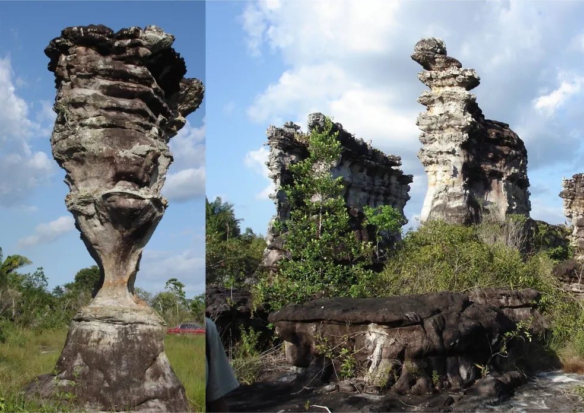
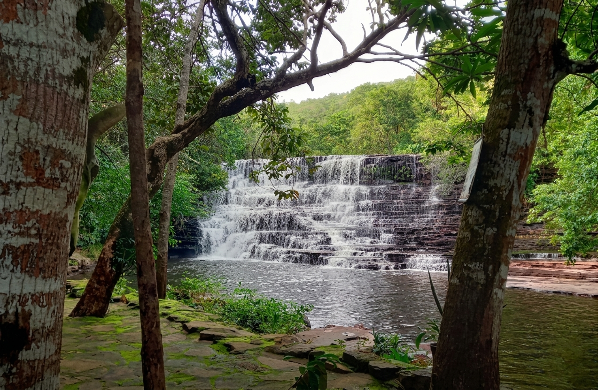
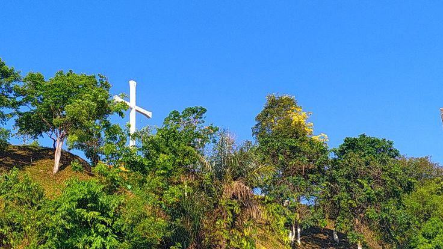
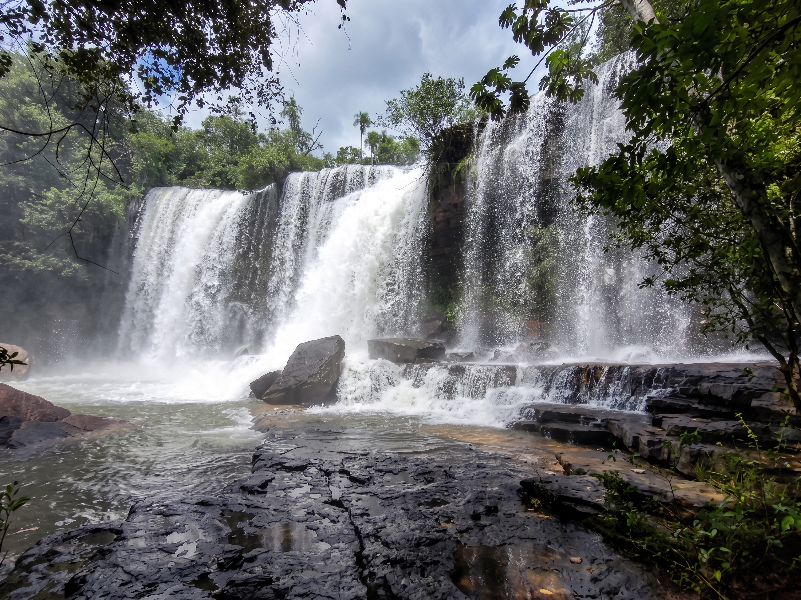
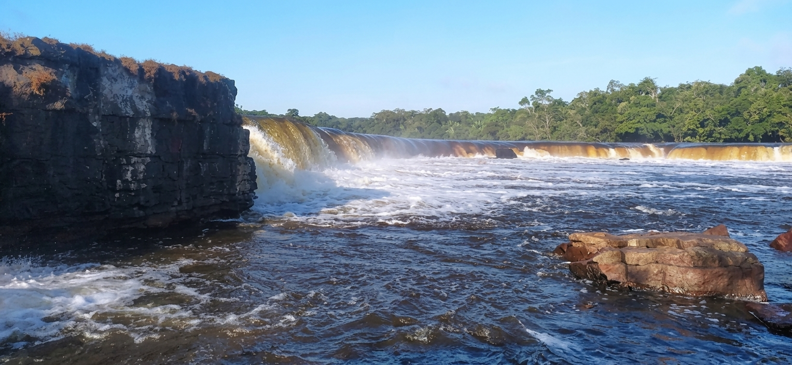

O que ver em Alenquer
Um catálogo vivo dos atrativos da cidade — das cachoeiras às praças históricas. Clique em cada ponto para conhecer mais.

Cidade dos Deuses
Formação rochosa esculpida pelo vento ao longo de séculos, com inscrições atribuídas a povos primitivos ainda não decifradas.
Ver detalhes
Cachoeira Vale do Paraíso
Conjunto de quedas d'água que reúne a Véu de Noiva (25 m), a Preciosa (35 m) e a Cachoeira Paraíso (12 m).
Ver detalhes
Mirante do Cruzeiro
Ponto alto da cidade com vista privilegiada sobre o rio e o casario alenquerense — favorito para o pôr do sol.
Ver detalhes
Praça João Tito Alves
Espaço de convivência e ponto de encontro da comunidade local, cenário de parte da vida cultural da cidade.
Ver detalhes
Cachoeira do Divar
Localizada a cerca de 62 km da sede do município, este lugar maravilhoso é um excelente refúgio na natureza.
Ver detalhes
Cachoeira do Bem Fica
Situada no rio Curuá, a queda d'água possui 100 metros de largura e 15 metros de altura. O local apresenta belas praias no verão e piscinas naturais nas pedras.
Ver detalhes